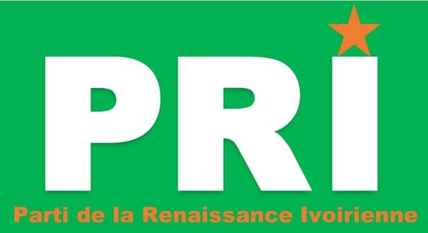

Le site officiel du Parti de la Renaissance Ivoirienne (PRI) est temporairement indisponible pour cause de maintenance technique. Nous mettons à jour notre plateforme pour mieux vous servir.
Site temporarily unavailable for maintenance.